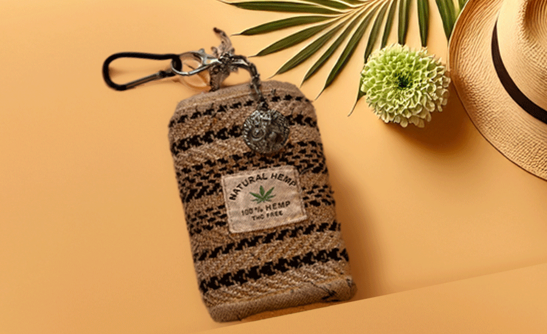

My Himalayan hemp purse is much more than an accessory—it’s a symbol of my adventurous journey to the majestic Himalayas. During that unforgettable expedition, as I trekked through serene mountains and bustling villages, my friend gave me this purse as a heartfelt souvenir. Holding it now, I’m instantly transported back to the chilly breeze, spectacular vistas, and warm laughter we shared along the way.
Inside this purse lies an entire map of my travels across India. From train tickets to local coins and small mementos, it holds the spirit of every city I explored, every meal I tasted, and every person I met. Sometimes, when I unzip it, I feel like unlocking chapters of my travel diary—smells, sounds, and feelings come rushing back, making every day feel like another step in my journey.
Adding to its charm, my girlfriend’s lucky tokens rest inside. These have been my constant companions, quietly guiding and protecting me wherever I go. I genuinely believe they’ve brought me luck and happiness on every road and through every challenge.
My Himalayan hemp purse isn’t just emotionally precious; it’s also my most affordable and eco-friendly favorite. Durable, sustainable, and designed with care, it reflects my values and adds meaning to my everyday life. For me, this purse is truly irreplaceable—a soulful piece of my travel story.